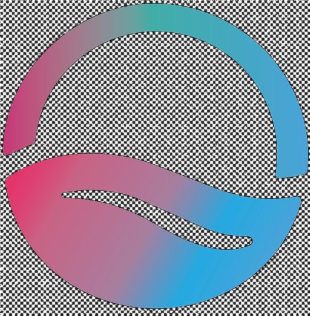

99.3% of metro firms. SBA metro profile ↗
Taiwan × Seattle · Real company challenges
Real work. Real proof. Across Taiwan and Seattle.
Connect Taiwan and Seattle students through real company challenges, academic preparation, and experienced mentors. PECULAB is seeking founding collaborators to turn important, non-urgent business problems into student projects: research a need, build and test a prototype, and present evidence of what the team learned.
TAIWAN ↔ SEATTLEA real question.
A shared project.
Proof of what you can do.LEARN · TEAM UP · TEST
A shared project.
Proof of what you can do.LEARN · TEAM UP · TEST
REAL WORK. REAL PROOF.
A bridge from classroom knowledge to work worth showing
For undergraduate, master's, and doctoral students, the proposed model connects academic depth with a real operating context. Companies bring a meaningful question; faculty and campus ambassadors connect the people; mentors help teams make better decisions.
- 01 / FRAME
A company defines the brief
Clarify the problem, desired outcome, constraints, available data, and what may be shared publicly. Choose important work with room to explore.
- 02 / MATCH
Build an interdisciplinary team
Match students' disciplines, experience, and availability to the challenge. Faculty connect preparation and assessment; campus ambassadors connect students and opportunities.
- 03 / MAKE
Build with mentor checkpoints
Interview users, research, prototype, and test. Mentors review key decisions and tradeoffs while students document and improve the work.
- 04 / PROVE
Present a result with evidence
Share a useful outcome with the company and prepare a portfolio story: the problem, decisions, prototype, validation, and lessons learned.
The Taiwan–Seattle exchange below is one proposed way to put this model into practice: prepare in Taiwan, collaborate in Seattle, and develop the work into a documented outcome.
Explore the Taiwan–Seattle pathway ↓SEATTLE / MARKET & OPPORTUNITY NETWORK
Start with 89,050 employer firms—and a campus network built for reach.
The full Seattle–Tacoma–Bellevue market is large, but the practical opportunity is narrower. This view separates sourced baselines from modeled assumptions, ranks industries for outreach, and turns the 16-college public system into a field strategy.
Reference analysis from the supplied PecuLab website: historical baselines and planning estimates, not live registration counts. Survey years and enrollment definitions differ; modeled values are not revenue forecasts.
78,891 firms with 1–19 employees plus 10,159 with 20–499.
King, Snohomish, and Pierce counties; enrollment definitions differ.
Includes nonemployers under explicit assumptions shown below.
A narrower starting point for practical outreach planning.
The headline market is mostly solo operators.
The broad count is useful for scale, but it overstates the firms most likely to sponsor a structured student project.
77%
- 300,418nonemployers
- 89,050employer firms
Practical first outreach should begin with employer firms, then selectively add high-fit owner-operators.
Two honest sizing views.
Inputs from SBA are sourced; selection rate, engagement frequency, and price are planning assumptions.
BROAD TAM
389,468 × 20% × 0.5 projects × $3,000
$116.8M
EMPLOYER-ONLY
89,050 × 10% × 0.5 projects × $2,500
$11.1M
The roughly 10× gap is driven primarily by whether 300,418 nonemployer firms are included. SBA does not publish a <100-employee breakout; 20–499 must not be read as <100.
76%using or exploring AI25% current users + 51% explorers; Reimagine Main Street, May 2025, n≈1,000.
44%lack deployment resources or expertiseGoldman Sachs 10,000 Small Businesses Voices, Feb. 2025, n=1,188.
46%not sure where to beginBPC analysis of a Google-commissioned survey, March 2024. Survey definitions differ.
Where PecuLab should look first.
Modeled outreach priority balances firm density, employer presence, AI headroom, and fit for bounded student work. Blue shows all small firms; orange isolates the employer subset.
1 · Professional & technical69,267 / 13,536
2 · Healthcare & social assistance32,898 / 10,266
3 · Retail25,145 / 6,539
4 · Construction30,763 / 13,300
5 · Accommodation & food12,711 / 7,752
6 · Manufacturing + wholesale13,688 / 6,607
7 · Real estate & rental40,719 / 6,333
All small firmsEmployer subsetValues: total / employer
VIEW THE FULL 18-SECTOR BASELINE
| NAICS sector | Employer firms | All small firms |
|---|---|---|
| Professional, scientific & technical services | 13,536 | 69,267 |
| Transportation & warehousing | 2,688 | 55,574 |
| Real estate & rental/leasing | 6,333 | 40,719 |
| Healthcare & social assistance | 10,266 | 32,898 |
| Construction | 13,300 | 30,763 |
| Other services | 8,858 | 30,576 |
| Retail trade | 6,539 | 25,145 |
| Admin/support/waste management | 5,033 | 23,476 |
| Arts, entertainment & recreation | 1,652 | 22,780 |
| Accommodation & food services | 7,752 | 12,711 |
| Educational services | 1,818 | 12,705 |
| Finance & insurance | 2,789 | 9,662 |
| Wholesale trade | 3,770 | 7,299 |
| Information | 1,528 | 6,963 |
| Manufacturing | 2,837 | 6,389 |
| Agriculture/forestry/fishing | 407 | 2,390 |
| Utilities | 57 | 178 |
| Mining/oil/gas | 25 | 111 |
Reconciliation note: the reference’s 18 rows sum to 389,606 small firms and 89,188 employer firms, each 138 above the overview. The reference does not explain the difference. Original values are retained; the table is not treated as a deduplicated total, and the model uses the overview baseline.
Sixteen public colleges create a distributed field network.
Approximate enrollment totals 90,538 across the three-county MSA. Local commercial districts around each campus can become repeatable prospecting zones.
10 · King≈55.5K LEARNERS
- Bellevue · 12,485
- Green River · 7,967
- Highline · 5,592
- North Seattle · 5,569
- Seattle Central · 5,396
- South Seattle · 5,210
- Shoreline · 4,477
- Lake Washington Tech · 3,564
- Renton Tech · 2,824
- Cascadia · 2,380
2 · Snohomish≈13.2K LEARNERS
- Everett · 6,698
- Edmonds · 6,549
4 · Pierce≈21.8K LEARNERS
- Pierce District · 8,137
- Tacoma · 6,199
- Bates Tech · 4,083
- Clover Park Tech · 3,408
+ Northeastern Seattle · nearly 1,500 graduate students≈92K combined modeled learner network
Enrollment figures are approximate and mix IPEDS fall and 12-month headcounts. Northeastern's campus figure is from November 2023 reporting ↗.
A simple 20-point prospect screen.
Score each item 0, 1, or 2. The first five are must-haves; any zero there disqualifies the lead until the condition changes.
Active revenue or at least one employeeMUST-HAVE
Reachable, engaged owner or decision-makerMUST-HAVE
Pain point expressible in one sentenceMUST-HAVE
Shareable process or example dataMUST-HAVE
Fits a 4–12 week nonurgent projectMUST-HAVE
One to nineteen employeesNICE-TO-HAVE
Digital baseline already existsNICE-TO-HAVE
Repeatable workflow with visible ROINICE-TO-HAVE
Already exploring AINICE-TO-HAVE
Referral potential through a local networkNICE-TO-HAVE
≥14 / 20Prioritize for outreach—with no must-have scored zero.
01 / CHALLENGE SUPPLYLocal SMEs
Important, non-urgent AI opportunities across every business function.
↓ BRIEF + MATCH
02 / CONNECTION LAYERCampuses + mentors + PecuLab
Scope the work, assemble the team, and guide key decisions.
↓ BUILD + REVIEW
03 / PROJECT CAPACITYCross-disciplinary student teams
Business, design, policy, science, engineering, and more.
↓ PROOF + MOBILITY
04 / SHARED OUTCOMEAI discovery, portfolio proof, internship or hire
The company learns faster; the student leaves with evidence. Internships and hiring are potential pathways, not guaranteed outcomes.
Observed regional access network.
The supplied reference records a six-institution scan of first-party pages dated September 2026. Each directed edge below records a documented institution → employer-connection mechanism; this is a scoped scan, not an exhaustive map or a list of PecuLab partners.
12INSTITUTION + MECHANISM NODES
11DOCUMENTED LINKS
31%BIPARTITE PATHWAY DENSITY
Calculation: 6 institutions + 6 mechanisms = 12 nodes; 11 links ÷ (6 × 6) ≈ 31%. These describe the reference scan, not registered partnerships.
- Northeastern Seattle ↗Observed edges: co-op · corporate research
- University of Washington ↗Observed edges: internships · recruiting · sponsored research
- Seattle University ↗Observed edges: micro-internships · internships · career events
- Bellevue College ↗Observed edge: career recruiting
- Seattle Colleges ↗Observed edge: employer talent marketplace
- Lake Washington Institute of Technology ↗Observed edge: industry partnerships (450+ reported)
Turn the map into a living market measure.
- REACHCount participating campuses, departments, companies, mentors, and students as distinct nodes.
- ACTIVITYCount submitted briefs, matched teams, mentor reviews, and completed outcomes as edges.
- ACCESSTrack which disciplines enter the network—not only engineering and computer science.
- MOBILITYMeasure projects that lead to interviews, internships, contracts, or hires.
- NETWORK EFFECTTrack repeat companies, referrals, and cross-campus projects to show whether the system compounds.
The university-side pattern is already visible in Seattle: Northeastern’s Seattle campus promotes faculty access, career development support, AI programs, and pathways for students from non-STEM backgrounds. View the Seattle Open House page ↗
Proposed sequence
Preparation, collaboration, and a real test
This is a partnership proposal. Participating schools will need to confirm credits, curriculum, dates, costs, and involvement of U.S. students.
One- or two-credit online course
Lean startup, problem framing, customer interviews, case studies, and cross-cultural teamwork.
Form cross-campus teams
Team up with willing local students. Potential partners include UW, Seattle University, and other Washington institutions, subject to confirmation.
Hackathon and POC
Start with a real need and build a testable proof of concept. Company and lab visits can add context.
Explore application pathways
If a team and technology qualify, evaluate a suitable regional or national NSF I-Corps pathway. Application and acceptance are not guaranteed.
Join the network
Choose how you want to contribute.
Companies with a challenge
Bring a meaningful, non-urgent business question, context, and a contact who can give feedback.
Register interest →Students ready to build
Apply your discipline to a real problem and work with teammates across campuses.
Register interest →Experienced mentors
Review problem framing, technical choices, and evidence at agreed checkpoints.
Register interest →Campus ambassadors
Connect students, faculty, and campus communities with project opportunities.
Register interest →Faculty who can co-teach
Connect a preparatory course, academic guidance, credits, and assessment.
Register interest →Universities and supporting institutions
Connect courses, labs, career programs, or resources for a deeper exchange.
Register interest →Supporters and connectors
Introduce potential collaborators, share opportunities, or offer resources.
Register interest →Mentors & campus ambassadors
Guided by people who have done the work
Industry mentors review problem framing, key decisions, and evidence at agreed checkpoints. Campus ambassadors connect students, faculty, and campus communities with project opportunities.
Industry mentors
David Q. Liu
Associate Professor of Computer Science, Purdue University Fort Wayne
Director, Purdue Quantum AI Security Lab; member of the Purdue Quantum Science and Engineering Institute
Quantum computing and AI — quantum machine learning, optimization, cybersecurity, and responsible quantum technology. Founder of MindGPA.
LinkedIn ↗Shih-Chieh Hsu
Professor of Physics, University of Washington
Adjunct Professor of Electrical & Computer Engineering; Director, NSF HDR Institute A3D3
Experimental particle physicist working on real-time AI for data-intensive scientific discovery.
LinkedIn ↗Ibitoye Olonisakin
Founder, OLONS
MS Computer Engineering, University of New Mexico (2020)
Building OLONS Proto — an AI advisor that learns your business in one conversation, then builds your website live.

LinkedIn ↗Aleksandar Stojanovic
Founder, Refine
AI-powered corporate training — adaptive 6-minute AI simulation lessons that turn company knowledge into execution.
LinkedIn ↗Campus ambassadors
Chi-ching “Gigi” Chuang, PhD
Faculty, School Psychology, Central Washington University
School psychologist; research in classroom management, social-emotional measurement, and ADHD. Former teacher in Taiwan and Fulbright recipient.
LinkedIn ↗Jing-Sheng Li, PhD
Assistant Professor, Department of Kinesiology, Seattle University
Biomechanist (PhD, Boston University) using high-precision movement tracking and medical imaging to explore therapies for musculoskeletal conditions. Trained in Taiwan.
LinkedIn ↗Make interest visible
Interest tally
——Faculty
—Institutions & companies
—Students
—Mentors, ambassadors & supporters
The public tally retains its existing categories. Companies are included under institutions; mentors and campus ambassadors under supporters. Your specific role is recorded with your participation message.
A concrete first step
Tell me how you might take part.
Bring a business challenge, mentor a team, connect a campus, co-teach, support an exchange, or join as a student. Tell us your context, what you can contribute, and your availability so we can explore a suitable first collaboration.